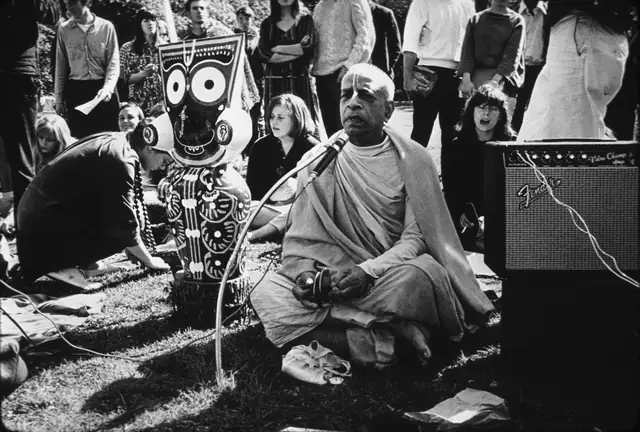

Кои сме ние
Едно вероизповедание, част от световна духовна общност
Обществото за Кришна съзнание е българското вероизповедание на Международното общество за Кришна съзнание (ИСКОН), духовно движение, основано през 1966 г. в Ню Йорк от Бхактиведанта Свами Прабхупада.